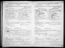

My Family Tree
Person Chart
Parents
| Father | Date of Birth | Mother | Date of Birth |
|---|---|---|---|
 Grant Emory Matthews Grant Emory Matthews |
1869 |  Isa May Cover Isa May Cover |
9/1/1869 |
Partners
| Partner | Date of Birth | Children |
|---|---|---|
| Hazel Mae Eckles |
Person Events
| Event Type | Date | Place | Description |
|---|---|---|---|
 Birth Birth |
1891 | Edenburg, Pennsylvania, USA | |
| Marriage |
6/9/1914 |
Media
Pictures

1914 Marriage George Emory Matthews and Hazel Mae Eckles